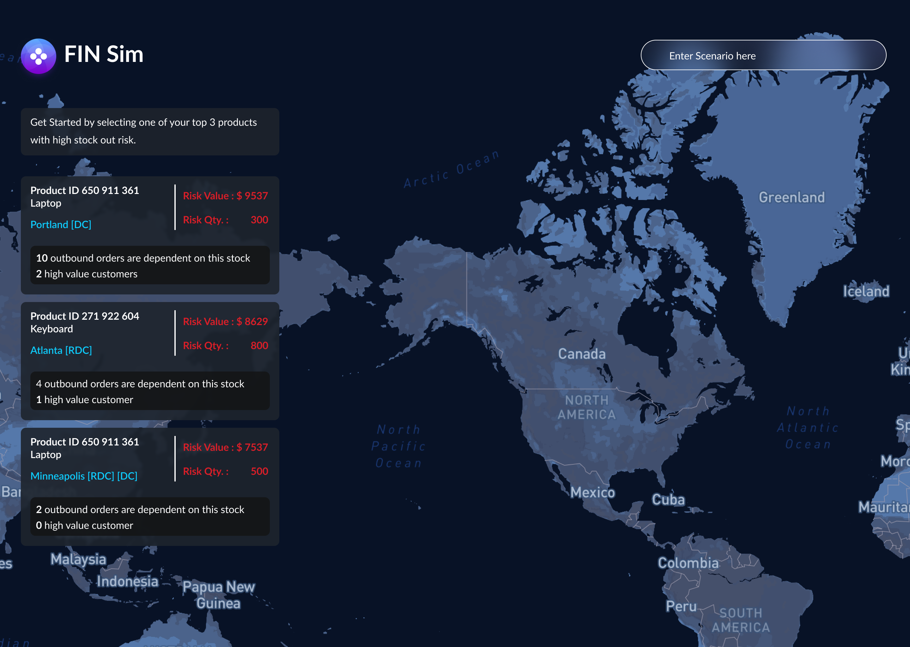
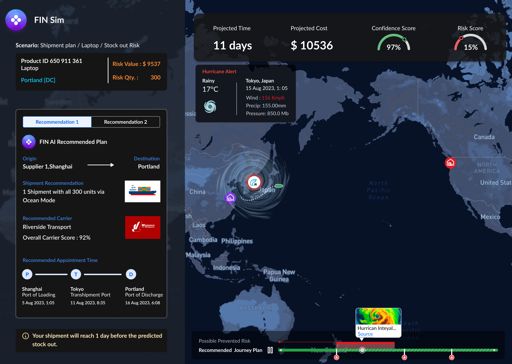

FIN Sim: Simulating Supply Chain Dynamics
A digital-twin simulation experience for stress-testing supply chain decisions before committing to them.
Design Leadership · AI/ML Concept Design · Interaction Design
Overview
Inspired by flight simulators — where pilots learn to fly by rehearsing in a consequence-free environment — FIN Sim applies digital-twin concepts to the supply chain world. A digital twin is a virtual representation of a physical system that mirrors its real-world counterpart, giving planners a place to test decisions before those decisions play out with real freight, real customers, and real cost.


What the simulation does
FIN Sim was designed around five outcomes: a clearer view into intricate supply chain systems, the ability to predict problems and surface contextual recommendations before they become disruptions, more confident decisions grounded in real-time digital-twin data, measurably better operational efficiency, and lower cost from testing and optimizing scenarios virtually instead of live.
Why this matters
Supply chain planners have historically had to make high-stakes rerouting and contingency decisions with incomplete information and no way to see the downstream consequences until after the fact. FIN Sim gives them a sandbox: run the "what if" before committing to it, the same way a pilot rehearses an emergency procedure long before ever needing it in the air.